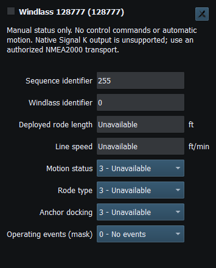
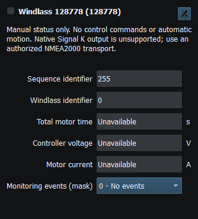

Windlass Operating Status (128777) and Monitoring Status (128778) are ordinary status instruments. They encode/decode supported properties; the UI is not a physical anchor motor-control panel.
Manual property values are sufficient for the supported TX path; no dedicated windlass generator is needed. Status fields do not grant a command/actuation capability.
Use Viewer, source/identifier distinctions and Diagnostics to locate the right instrument. Zero, unavailable measurements and enum statuses have different meanings. A zero counter/current can be valid; an unavailable wire field should not become an implausible engineering quantity.
These instruments report simulated windlass status; they do not operate the anchor motor or its interlocks. Check the receiving instrument and follow the physical equipment safety procedures. Stop/F12 ends external Sending.

Figure 57. Windlass operating status and rode measurements (PGN 128777). Click to enlarge.

Figure 58. Windlass voltage, current, temperature and monitoring status (PGN 128778). Click to enlarge.
Generating NMEA Data · Enable, Dispatch and Sending · Manual Vessel Movement · Autopilot and Route Following · Game Controller Mode · Engine and Transmission Simulation · Weather and Environmental Simulation · AIS Simulation · Connection Troubleshooting · Route Overview · Engineering Units